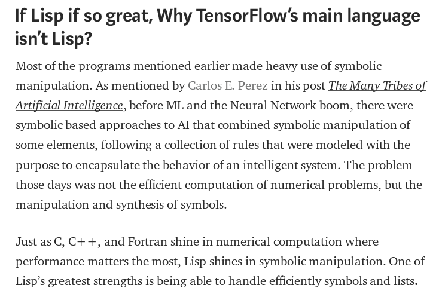
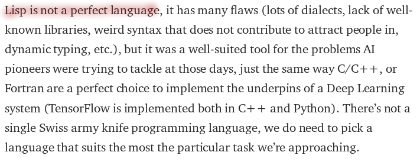
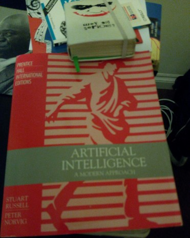

AI, My Personal Meeting Ends Experience.
Table of Contents
Resources & Materials.
MIT 6.034 Artificial Intelligence, MIT-OCW. fall 2010 by P.Winston.
In these lectures, Prof. Patrick Winston introduces the 6.034 material from a conceptual, big-picture perspective. Topics include reasoning, search, constraints, learning, representations, architectures, and probabilistic inference.
- Winston, P. (1993). Artificial Intelligence, 3rd ed. [Content] Massachusetts: Addison-Wesley Publishing Co.
- Winston, P. (1984). LISP, 2d ed. Content.
- A post for help from at the CommonLISP G+ community, I got known about MGL, an entire so promising Common Lisp Machine Learning Library by Gábor Melis.
Artificial Intelligence,
All my queries about the current relationship between LISP & AI concurrent in this paper subtitle question: If LISP is so great, why TensorFlow's main language isn't LISP

Perhaps biased towards LISP as still amazed as learner, I had to put the rest of the above paragraph on one side, below. As, though I still find the split of the programming language evolution referenced in the text a kind of tragedy, I cannot see LISP leaking of anything internal so not as agent of course but suffering of it and so powerful and promising still. And all other new implementations just eventual workarounds otherwise pushed by marketing|industrial requirements, rather. Actually despite of the large incubation time in most of them (let's say C++, Java, Python) have the more deeper functionalities, think of polymorphism or recurrence (all them modelled from LISP) not so long ago. Some day I'll detail this idea further (still in need of background I am).

Just as a illustrated extended partial reference on the above comment, here the very popular introductory but ytb textbook (as the html online version it's under hosting issues or not available any more (well, with luck another option here) & here some clues if in need of tracking contents on that other reference (I found it useful its comparing approach to) the surprisingly unknown book on programming languages.
{kind=link}
What about a LISPy Live Terms Glossary.
I have just felt in need of integrating tools, toolkit and approaches.
A Modern Approach.
An Edx MOOC & awesome reading help & here my notes.
